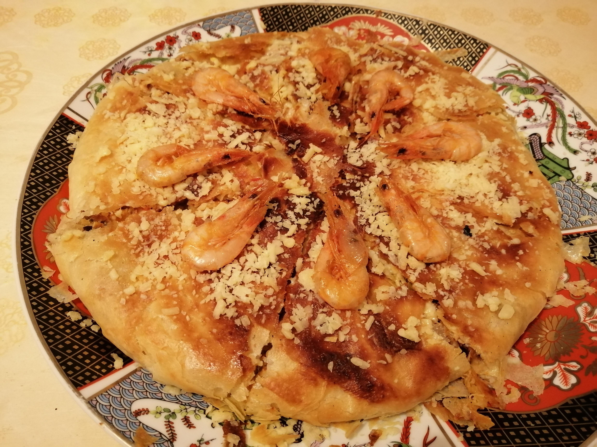

pastilla poisson

Ingredients
- poissons
- Paprika
- Sel
- 1 cuillère à café de sauce soja
- Ail
- Persil
- ± 20ml d'huile d'olive
- Vermicelles chinois
- Poivron rouge et jaune
- Feuilles de filo
Étapes
- Marinez le poisson et mettre au four pendant 30 minutes à 250°C
- À la fin des 30 min, gardez la marinade du poisson dans un récipient, y ajouter 1/2 litre d'eau et les vermicelles chinois ensuite mettre la préparation à chauffer pendant 10 minutes
- Apres les 10 minutes retirer l'eau couper les vermicelles et mélangez-les aux poissons
- Prenez les poivrons, coupez en longueur, y rajouter l'ail et faire sauter avec sel et huile
- Mélangez toute la préparation puis mettre dans la feuille fino et enfournez 25 min à 200°C